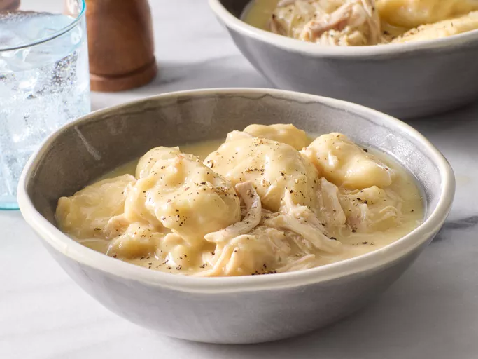

Chicken and Dumplings

A wonderful comfort food
This classic dish features tender chicken simmered in a rich broth with fluffy dumplings, perfect for a cozy meal.
This wonderful comfort food is also a particularly easy dish to prepare and even easier to make it disappear! This
isn't a dish that is going to sit in the refrigerator until it goes bad and easy to portion out for a couple meals
throughout the week. This especially helpful after those long nights at work when you just want something filling
that isn't going to cost you money everytime you need dinner to be convenient.
Ingredients
- 2 (10.5 ounce) cans condensed cream of chicken soup
- 3 (14 ounce) cans chicken broth
- 3 cups shredded cooked chicken meat
- 2 (10 ounce) cans refrigerated biscuit dough
Instructions
- Step 1: Gather all ingredients
- Step 2: Stir condensed soup, chicken broth, and shredded chicken together in a large saucepan over medium-high
heat until it begins to simmer.
- Step 3: Cut each biscuit into quarters, and gently stir into the simmering soup.
- Step 4: Reduce heat to medium-low, cover, and simmer until biscuits are no longer doughy in the center, 10 to
15 minutes.
- Step 5: Serve hot and enjoy your delicious chicken and dumplings!
Home